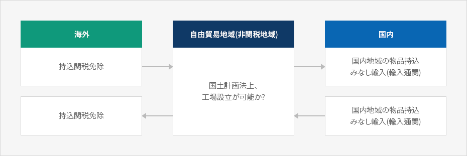
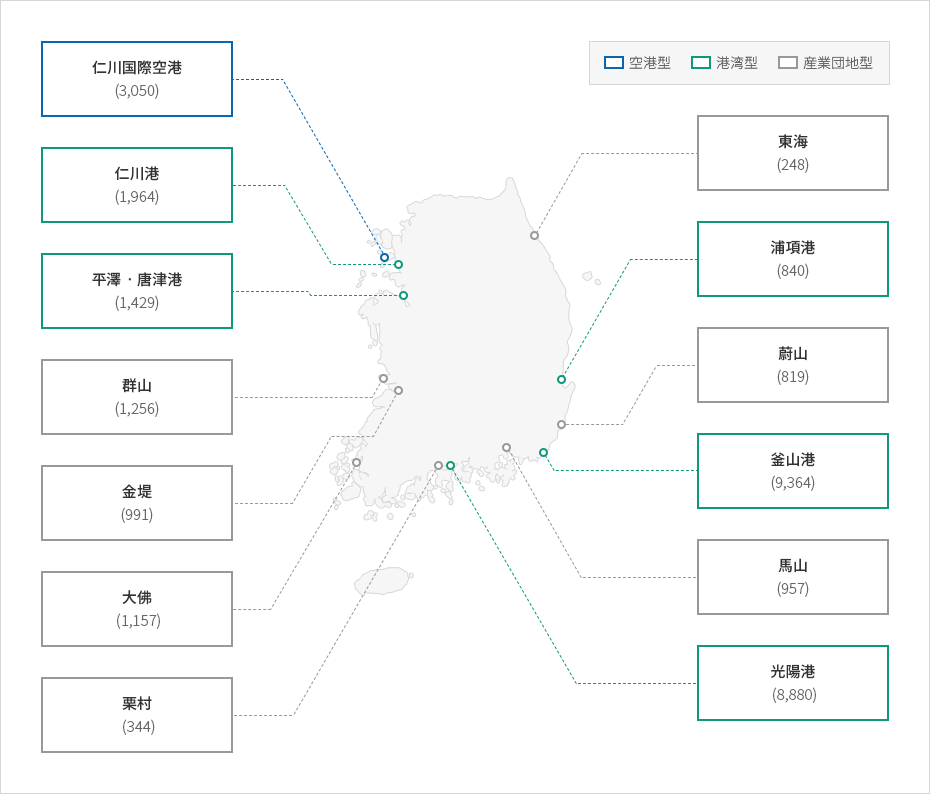

自由貿易地域
- Home
- 투자의 기회
- 外国人投資企業の重点誘致地域
- 自由貿易地域
産業立地には経済自由区域、外国人投資地域及び自由貿易地域などの外国人投資家を支援するための地域があり、立地は賃貸又は分譲の形で支援される。このような地域は一定条件を満たせば立地支援のみならず、租税減免が適用され、他の法令で制限される事項に対しても例外が適用される場合もある。
自由な製造、物流、流通及び貿易活動などが保障される特別地域で、外国人投資については関連法令に基づいて租税及び賃借料減免、支援施設などの様々な優遇措置が適用されている。 特に、関税留保地域という点で、他のどの地域よりも輸出入活動に有利である。
自由貿易地域の概念図



※出所 : 産業研究院、「外国人投資誘致経済特区の充実化方策の研究」、2013
自由貿易地域の指定現況


-
空港型
- 仁川国際空港(3,050)
-
港湾型
- 仁川港 (1,964)
- 平澤・唐津港(1,429)
- 浦項港 (840)
- 釜山港 (9,364)
- 光陽港 (8,880)
-
産業団地型
- 群山 (1,256)
- 金堤 (991)
- 大佛 (1,157)
- 栗村 (344)
- 東海 (248)
- 蔚山 (819)
- 馬山 (957)

※ 出所 : 産業研究院、「外国人投資誘致経済特区の充実化方策の研究」、2013